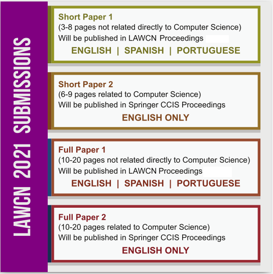

Authors of accepted papers may present their work in person or remotely.
Prospective authors are invited to contribute to the conference by electronically submitting papers on the topics covered by the event (see complete list below).
GUIDELINES FOR AUTHORS: PAPERS
- As in last editions, selected papers of LAWCN 2021 will be published in the Communications in Computer and Information Science (CCIS) proceedings series.
Best papers (in English) that are related to the scope of the book series will be published as a chapter in Springer Nature (CCIS; ISSN 1865-0929).
See book of LAWCN 2019 and 2017.
CCIS is abstracted/indexed in DBLP, Google Scholar, EI-Compendex, Mathematical Reviews, SCImago, Scopus. CCIS volumes are also submitted for the inclusion in ISI Proceedings;
- Papers that are not related directly to Computer Science (Computational Neuroscience) will be published online in the III Latin-American Workshop on Computational Neuroscience Proceedings (with ISBN) and can be submitted
in English, Portuguese, or Spanish (see proceedings of LAWCN 2019 and 2017.
- Papers will be evaluated based on their quality and significance of theoretical and practical contribution to Computational Neuroscience, Neuroengineering, Artificial Intelligence, and Neuroscience in general;
- All papers (Short or Full) must be in PDF format and include abstract, figures, tables and references in the minimum/maximum number of pages (according to the category desired);
- Papers can be submitted in four categories (see image bellow):
- Short paper not related directly to Computer Science (Computational Neuroscience):
- Length: between 3 and 8 pages
- Languages: English, Spanish, and Portuguese
- Short paper related to Computer Science (Computational Neuroscience):
- Length: between 6 and 9 pages
- Language: English only
- Full paper not related directly to Computer Science (Computational Neuroscience):
- Length: between 10 and 20 pages
- Languages: English, Spanish, and Portuguese
- Full paper related to Computer Science (Computational Neuroscience):
- Length: between 10 and 20 pages
- Language: English only

- Papers can be submitted in English, Portuguese or Spanish, but only the best papers, in English,
and directly related to Computer Science will be published in CCIS;
- Papers should be submitted exclusively through the conference submission system, linked below;
- At least one author must register, pay the registration fee, and present orally the accepted paper in order for the manuscript to be included in the workshop proceedings / CCIS volume. If more than one paper per first author is accepted, there will be an extra registration fee.
- One of the authors must sign and attach the disclosure form if the paper is accepted;
- It is encouraged that authors own an identification from ORCID to be included in the manuscript main body. You can register at ORCID here;
- All authors should consult and follow Springer’s author’s guidelines and use their
proceedings templates, either for LaTeX
(template or overleaf) or for MSWord, for the preparation of their papers;
- All authors should read and abide to Springer’s ethical guidelines
and Springer Nature Code of Conduct for Book Authors;
GUIDELINES FOR AUTHORS: ABSTRACTS
- Abstracts will be published online in the III Latin-American Workshop on Computational Neuroscience Proceedings (with ISBN).
- Abstracts will be evaluated based on their quality and significance of the theoretical and practical contribution to
Computational Neuroscience, Neuroengineering, Artificial Intelligence, and Neuroscience in general. Ongoing and incomplete work is perfectly acceptable for abstracts.
- Authors should strictly observe the following guidelines:
- Abstracts must contain the following sections (in order):
Full title, List of authors, Affiliations, Introduction (with objectives), Methods, Results, Discussion, and Acknowledgments (for funding agencies and others).
- References should be avoided. If mandatory, they should be kept to a very minimum and should be inserted in short format (without title) in the end of the abstract.
- Texts must contain a maximum of 600 words, including all sections.
- Texts must be a single page in length.
- Authors are allowed to include one figure OR one table only if it can fit in a single page with the main text,
placed after Discussion section and before Acknowledgments.
- Font size, margins, line separation, and other formatting parameters are described in the abstract model found here and must be observed strictly.
- Authors must submit their abstracts exclusively via e-mail, to lawcn@ufma.br. DO NOT USE the conference paper submission system, linked in the previous session;
- Authors may identify their e-mail with the following subject: “Abstract submission: , - ”. For example: “Abstract submission: McCulloch, W. – Univ. of Chicago”;
- At least one author must register, pay the registration fee, and present the accepted abstract as poster in the conference (time and place to be defined) in order for the work to be included in the workshop proceedings. If more than one abstract per the first author is accepted, there will be an extra registration fee.
- Abstracts with too many grammatical errors, typos, or formatting problems will be rejected.
- Abstract, poster, and pitch must be in the same language.
Important Dates
- Paper submission deadline:
August 16, 2021 September 6, 2021 September 27, 2021 October 11,2021
- Notification of acceptance (paper):
September 30, 2021 October 29,2021
- Camera-ready (paper):
October 31, 2021 November 16, 2021November 23, 2021
- Abstract submission deadline:
September 27, 2021 October 11,2021
- Notification of acceptance (abstract):
October 15, 2021 October 29, 2021
- Camera-ready (abstract):
October 31, 2021 November 8, 2021 November 23, 2021
- Workshop: December 8-10, 2021 (UFMA, São Luís do Maranhão, Brazil and Online)
Disclaimer
Dates may change according to the terms negotiated with publisher and availability of reviewers.
Please, check this page frequently for updates.
Topics
Computational Neuroscience
- Biophysically realistic models
- Single-neuron modeling
- Models of brain networks and circuits
- Sensory processing
- Development, axonal patterning, and guidance
- Memory and synaptic plasticity
- Consciousness
- Computational clinical neuroscience
- Neuroinformatics
- Educational issues
- Neural coding
- Neural statistics
- Dendritic computation
- Neural basis of persistent activity
- Nonlinear receptive field mapping
- Representations of time and sequence
- Reward systems, decision-making simulation
- Synaptic plasticity
- Population coding
- Spiking neural networks and applications
- Complex systems and network conectivity
- Neural Information Theory
- Neurocomputational systems
Neuroscience
- Sensory processing
- Network dynamics
- Reinforcement learning
- Motivation and decision making
- Statistical approaches in neuroscience
- Systems neuroscience
- Learning and memory
- Attention and arousal
- Sensory-motor integration
- Learning in networks
- Educational issues
Neuroengineering
- Large-scale recordings
- Neural signal processing
- Neuromodulation
- Neuroprosthetics
- Robotics
- Humanoid robots
- Robots in health
- Robots for elderly people
- Sensoring in robotics
- Fusion of sensors
- Hardware implementations in neuroscience
- Software implementations in neuroscience
- Brain Computer Interfaces:
design and applications
- Educational issues
Artificial Intelligence and related topics
- Artificial Intelligence
- Techniques in neuroscience
- Bioinformatics
- Clustering and applications
- Computer vision, cognitive and humanoid vision
- Databases, data mining, intelligent data analysis,
knowledge-based systems and linguistic tools
- Data visualization and applications
- Deep Learning
- Statistical pattern recognition
/ document processing and recognition
- Fuzzy and hybrid techniques
- Geometric algebra application in perception action
- High performance computing for pattern recognition
- Image coding, processing and analysis
- Kernel machines
- Mathematical theory of computational neuroscience
- Natural language processing and recognition
- Neural Networks
- Parallel and distributed applications
for computational neuroscience
- Robotics and humanoids shape and texture analysis
- Signal processing and analysis
- Spatiotemporal analysis
- Educational issues